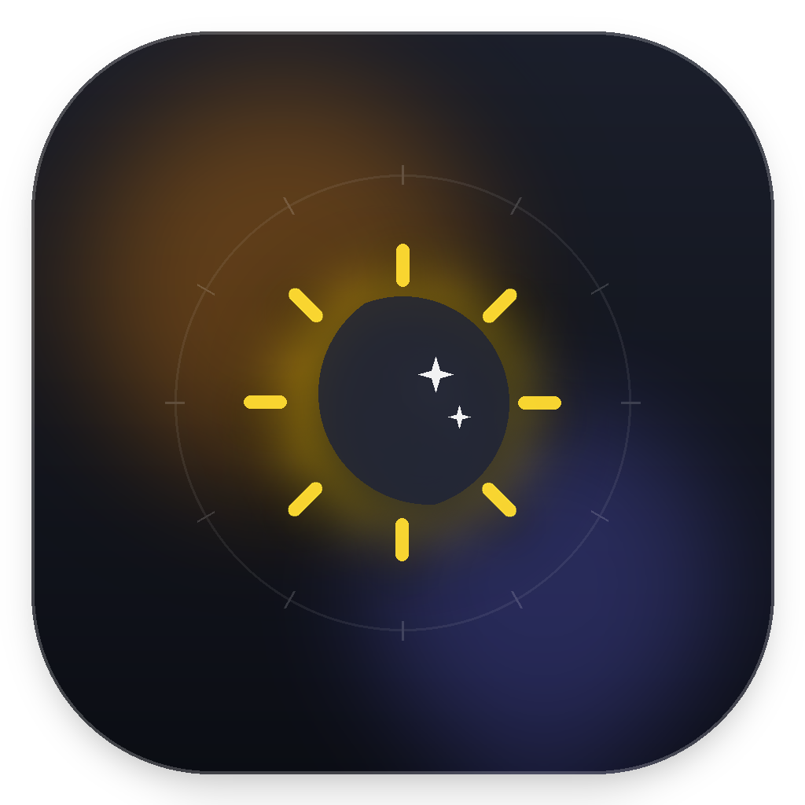

MonitorGlow for macOS · Effective Date: September 26, 2026
Sunshine Studios ("we", "us", or "our") built MonitorGlow as a macOS display dimming utility. This policy explains the app's local settings and Firebase Analytics collection.
Brightness preferences, display identifiers used to restore those preferences, trial timing, and shortcut settings are stored on your Mac. MonitorGlow does not send screen content, window names, video streams, credit card details, or the names of connected monitors in its custom analytics events.
MonitorGlow dims external displays in software using macOS CoreGraphics gamma tables or a click-through overlay. It does not control the monitor's physical backlight through DDC/CI.
Purchases for MonitorGlow Pro are processed directly through Apple's App Store Connect StoreKit 2 infrastructure. We do not process, collect, or store any credit card or financial information. All billing data is governed solely by Apple's Privacy Policy.
MonitorGlow uses Google Firebase Analytics automatically to measure app launches, daily use, display-control actions, presets, shortcuts, paywall views, purchase funnel actions, and review prompt events. Events include feature names, brightness percentages, display counts, product identifiers, and timestamps. Firebase may also collect app instance identifiers, device and operating-system information, and usage diagnostics as described in Firebase's privacy documentation. We use this information to understand feature use and improve the app. We do not use Firebase event data as the source of financial reporting, and we do not sell this data. Analytics requires an internet connection to upload events.
If you have any questions regarding this Privacy Policy, you may contact the developer directly at themansigoel@gmail.com.